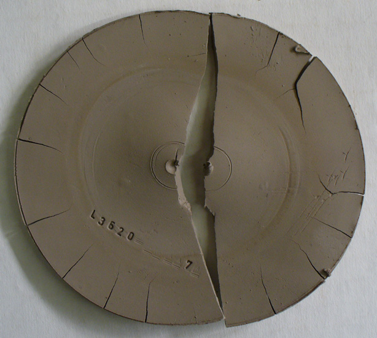
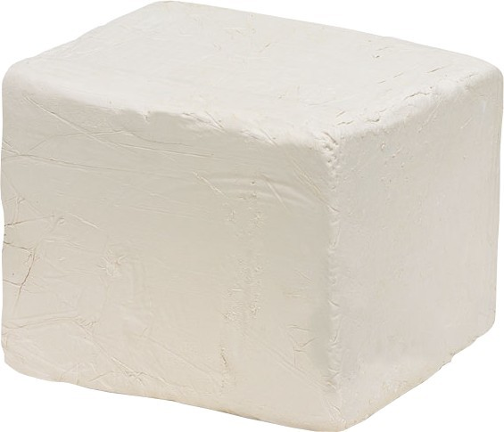

Building functional ceramics is one of the oldest known human traditions, dating all the way back to 18,000 BC. This process involves forming a clay body into the required shape and then heating the object to high temperatures in a kiln to remove all the water from the object so that it can maintain a hardened state.
Read more about the history of pottery.Different types of clay bodies are utilized for variance in texture, color, and hardness.
Ball Clay is made up of kaolinite, mica, and quartz. It is a fine-grained sedimentary clay that is described as very plastic in nature. After firing it is milky white in color.
Porcelain Clay is made up of only Kaolinite. It is regarded as the most presitgious type of clay because of its delicacy, strength, and white color.

Stoneware Clay is made from fine-grained plastic clay bodies of Kaolinite, Mica, and Quartz and varies widely in its elasticity. These clay bodies often contain impurities like carbon and iron which give the clay a dirty or gritty look.
Read more about types of clay bodies.The most common form of pottery decoration is glazing. Glaze is a glassy coating on top of the clay body which functions are decoration as well as protection.
| Type of Glaze | Appearance & Function |
|---|---|
| Ash Glaze | Created with wood ash, can be done naturallyin a wood kiln or artifically by mixing ash with water and painting onto clay surface. |
| Under Glaze | Created by painting directly onto clay surface prior to glazing; this makes the decoration completely durable. |
| Over Glaze | Created by painting directly onto glaze surface after glazing; when re-fired, the overglaze melts into the glaze and makes the decoration durable. |